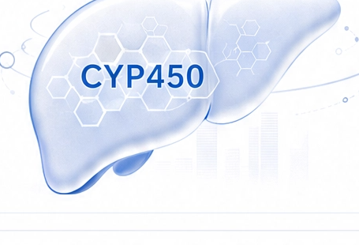

抗抑郁药
β受体阻滞剂
止痛药
抗肿瘤药物等
药物基因组学评估健康管理报告 | 10/16
三、核心指标深度解读
CYP450 酶系统与药物代谢
基因决定了您对药物的代谢速度，直接影响疗效与副作用。
1. CYP450 酶系统简介

CYP450 是一组在肝脏中发挥关键作用的代谢酶，负责代谢体内大多数药物（约75%），影响药物的活化、失活和清除。不同的 CYP450 酶由不同基因编码，存在个体遗传差异，导致药物代谢速度不同，进而影响疗效与副作用风险。
2. 主要 CYP450 酶及其代谢的常见药物
抗血小板药
质子泵抑制剂
抗癫痫药
抗抑郁药等
非甾体抗炎药
抗凝药（华法林）
降糖药
抗癫痫药等
降脂药
免疫抑制剂
钙通道阻滞剂
镇静催眠药等
抗肿瘤药物
抗抑郁药
支气管扩张剂
咖啡因等
3. 基因型与代谢表型对应关系
4. 临床意义
精准用药
根据基因型预测药物代谢速度，指导个体化给药方案。
提高疗效
选择合适药物和剂量，提高治疗效果，避免疗效不足。
降低风险
减少药物不良反应和毒性风险，保障用药安全。
个体化医疗
为临床用药决策提供科学依据，推动个体化医疗实践。
注：本报告仅提供基因检测结果的解读建议，具体用药请遵循临床医生的专业判断。